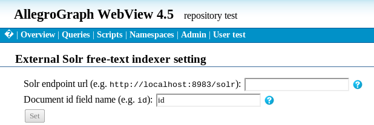

Introduction
AllegroGraph supports creating free text indices using Apache Solr, which we describe in this document.
Note that freetext indexing is orthogonal to triple indices like spogi. Freetext indices let you quickly map from words and phrases to triples; triple indices let you quickly find triples that match particular patterns.
Other free text indexers in AllegroGraph
There is also a native free text indexer, described in Free Text Indices.
Text indexing with Apache Solr
Apache Solr is an open-source freetext indexing/searching platform from the Apache Lucene project. Lucene is a Java Based Freetext Indexer with many many features. Solr is an XML database wrapper around Lucene.
Apache Solr is described on the following website: lucene.apache.org/solr/.
Should you use the Solr indexer or the native AllegroGraph text indexer?
The native free text indexer, described (as said above) in Free Text Indices, is sufficient for many purposes and has these advantages:
It is generally faster.
It has a simpler API (Solr runs as a separate program which must communicate with AllegroGraph).
You must keep Solr and AllegroGraph in sync. That is automatic with the native indexer.
But because Solr is a public project with many users and many contributers, it has many features which are not in the AllegroGraph native free text indexer. Further, it is constantly being enhanced.
Solr supports:
Many languages
Very flexible pipe line architecture for tokenizers, stemmers, etc.
External file-based configuration of stopword lists, synonym lists, and protected word lists
Relevancy ranking and word boosting *
Finding words close together *
Faceted Search *
Text clustering *
Hit highlighting *
The bullets marked with stars are Solr features not in the native free text indexer.
Installing Apache Solr
Because it is a separate application, AllegroGraph itself does not start the Apache Solr application.
Further, the application itself is not part of the AllegroGraph distribution.
Before using Solr to create indices and do searches, please download and install Solr (which again, is not a Franz Inc. product) as described on the Apache Solr website.
In the rest of this document, we assume you have the Solr server installed and running on your computer.
Important notes on running Solr with AllegroGraph
Please note the following:
The Solr database needs to be populated. Adding triples to a triple store does not automatically adds records to Solr. Nor does deleting triples delete records from Solr.
The Solr database needs to have a field that contains an integer document id. You may use triple ids for it, or you may use your own numberings, and insert
(subject !<http://www.franz.com/solrDocId> document-id)
into the triple store to establish the association of the document id with the subject. document-id must be of type xsd:long.
Settings for Solr
Two database metadata values have been added to keep the information needed to connect to the Solr server:
solr-endpoint : the URL of the solr server.
solr-id-field : the name of the solr field that contains docid.
These can be set and retrieved with the following Lisp functions:
Returns the current Solr connection parameters in a plist.
Currently it contains two items:
- :endpoint to specify Solr server endpoint.
- :id-field to specify the Solr field name that contains document id.
Set Solr connection parameters.
You can set either :endpoint or :id-field, or both.
These parameters can also be set in AGWebView.
Solr usage
There are two new prolog functions:
- solrid
?id ?query [?howmany]Search the Solr database with ?query, and unify the docid to ?id. ?howmany limits the max number of matches. Its default is 100. The query is parsed by the Solr server, so you can use the syntax supported by it. Multiple words are regarded as an OR search (by default---it depends on the Solr server config). The keyword AND can be used for 'and' condition, and parentheses can be used for grouping. See the Solr documentation for more details.
- solr-text
?s ?query [?howmany]After obtaining Solr docids by solrid, this unifies them to:
(q ?s !<http://www.franz.com/solrDocId> ?id))
The following Lisp function is exported from the db.agrpah.query.solr package:
- get-ids-from-solr-query
(query &optional (howmany 100))
Issue QUERY to the external Solr server, retrieve the document ids and return them as a list of integers. Solr connection parameters need to be set up by set-solr-parameters before calling this function.
Solr example
Here is a simple example. It is difficult to anticipate all the ways the Solr interface will be used and the setup can differ quite a lot depending on what the application wants to index. And there is great flexibility in setting up the Solr schema, and determining what is a valid Solr query depends on how the Solr schema is set up.
The Solr schema defines what kind of information is stored for each document. AllegroGraph requires that the schema at least contain a field which contains a unique number to identify the document.
Download the latest version of Solr if you have not already done so. We assume the variable $SOLR is the directory into which the Solr distribution was extracted.
Open $SOLR/example/solr/conf/schema.xml with an editor. Find the <fields> element and replace its body with the following field elements:
- In the $SOLR/example directory, run the Solr server.
java -Djetty.port=8983 -jar start.jar - From AGWebView, go to a repository page. In the bottom of the "Store Control" list you will find a link "Manage external Solr free-text indexer". Clicking it brings you to the "External Solr free-text indexer setting" screen:
<field name="id" type="string" indexed="true" stored="true" required="true" />
<field name="predicate" type="string" indexed="true" stored="true"/>
<field name="text" type="text_general" indexed="true" stored="true"/> In this case, the 'id' field serves to identify the document. We'll also index the predicate part as the 'predicate' field, and both the object and the subject parts as 'text' fields.
It is also necessary to comment out the copyField elements.
The jetty.port parameter specifies the TCP port number on which the Solr server will listen. If you need to run multiple Solr servers on one machine, choose different port numbers for each. (Solr can only have a single repository per server, so you need multiple servers if you want to serve more than one repository).
This command runs the server in foreground, with tons of debugging messages to stdout. You may want to run redirect its output elsewhere and/or put the java process background, e.g.
(java -Djetty.port=8983 -jar start.jar > /dev/null 2>&1)& For further customization of Solr server, please consult the Solr documentation.

Type "http://localhost:8983/solr" in "Solr endpoint url" box. Adjust
the port number to match the number you used for the jetty.port parameter
when you started the Solr server.
The "Document id field name" box specifies the Solr field name to be used
as the unique document ID. We set it up as "id" in step 3 above,
so you can leave it as "id".
Click the "Set" button to save the settings. Now you can query Solr from AllegroGraph's prolog or Lisp interface. However, in the beginning, the Solr database is empty. You need to populate it.
AllegroGraph does not handle insert/update/delete operations on the Solr database, since it needs a separate commit from AllegroGraph's own commit. You can use Solr's REST HTTP API, or one of their language bindings, to populate the Solr database. The AllegroGraph Lisp client also has a Solr binding. The Lisp code solr-example.cl, below, shows one way to insert data into Solr as well as adding triples to AllegroGraph.
Once the Solr database is populated, you can issue a prolog query using solrid/2. For example, the following query returns a list of characters whose line contains "good".
(select (?s)
(solrid ?id "good")
(q ?s !<http://www.franz.com/solrDocId> ?id)) (You can also use the predicate solr-text. It essentially combines both clauses into one, so (select (?s) (solr-text ?s "good")) has the same effect as the query above.)
By default, space-separated words in a Solr query means OR. So the following query returns the doc ids that contain either "good" or "him" or both in their indexed parts:
(select (?id) (solrid ?id "good him")) while the following returns doc ids whose indexed parts contain both "good" and "him" but not those that contain "good" but not "him" or "him" but not "good":
(select (?id) (solrid ?id "good AND him")) Please consult the Solr documentation for advanced queries. The solrid and solr-text functions pass the query string to Solr as-is, and it's up to the Solr engine to interpret it. There is great flexibility on the Solr side to customize how the query string should be parsed.
solr-example.cl
In many browsers, the long lines will look truncated but the text will cut and paste correctly.
;; -*-mode:common-lisp, package:db.agraph.user-*-
(in-package :db.agraph.user)
(eval-when (compile load eval)
(enable-!-reader))
(register-namespace "names" "http://www.franz.com/names#")
(register-namespace "actions" "http://www.franz.com/actions#")
(register-namespace "fi" "http://www.franz.com/")
(defvar *solr-endpoint* "http://localhost:8983/solr")
(defvar *solr-test-data*
'(("Master" "Boatswain!") ;1
("Boatswain" "Here, master: what cheer?") ;3
("Master" "Good, speak to the mariners: fall to't, yarely,or we run ourselves aground: bestir, bestir.") ;5
("Boatswain" "Heigh, my hearts! cheerly, cheerly, my hearts! yare, yare! Take in the topsail. Tend to the master's whistle. Blow, till thou burst thy wind, if room enough!") ;7
("ALONSO" "Good boatswain, have care. Where's the master? Play the men.") ;9
("Boatswain" "I pray now, keep below.") ;11
("ANTONIO" "Where is the master, boatswain?") ;13
("Boatswain" "Do you not hear him? You mar our labour: keep your cabins: you do assist the storm.") ;15
("GONZALO" "Nay, good, be patient.") ;17
("Boatswain" "When the sea is. Hence! What cares these roarers for the name of king? To cabin: silence! trouble us not.") ;19
("GONZALO" "Good, yet remember whom thou hast aboard.") ;21
("Boatswain" "None that I more love than myself. You are a counsellor; if you can command these elements to silence, and work the peace of the present, we will not hand a rope more; use your authority: if you cannot, give thanks you have lived so long, and make yourself ready in your cabin for the mischance of the hour, if it so hap. Cheerly, good hearts! Out of our way, I say.") ;23
("GONZALO" "I have great comfort from this fellow: methinks he hath no drowning mark upon him; his complexion is perfect gallows. Stand fast, good Fate, to his hanging: make the rope of his destiny our cable,for our own doth little advantage. If he be not born to be hanged, our case is miserable.") ;25
("Boatswain" "Down with the topmast! yare! lower, lower! Bring her to try with main-course. A cry within A plague upon this howling! they are louder than the weather or our office.") ;27
("Boatswain" "Yet again! what do you here? Shall we give o'er and drown? Have you a mind to sink?") ;29
("SEBASTIAN" "A pox o' your throat, you bawling, blasphemous, incharitable dog!") ;31
("Boatswain" "Work you then.") ;33
("ANTONIO" "Hang, cur! hang, you whoreson, insolent noisemaker! We are less afraid to be drowned than thou art.") ;35
("GONZALO" "I'll warrant him for drowning; though the ship were no stronger than a nutshell and as leaky as a sieve.") ;37
("Boatswain" "Lay her a-hold, a-hold! set her two courses off to sea again; lay her off.") ;39
("Mariners" "All lost! to prayers, to prayers! all lost!") ;41
("Boatswain" "What, must our mouths be cold?") ;43
("GONZALO" "The king and prince at prayers! let's assist them,For our case is as theirs.") ;45
("SEBASTIAN" "I'm out of patience.") ;47
("ANTONIO" "We are merely cheated of our lives by drunkards: This wide-chapp'd rascal--would thou mightst lie drowning The washing of ten tides!") ;49
("GONZALO" "He'll be hang'd yet,Though every drop of water swear against it And gape at widest to glut him.") ;51
("ANTONIO" "Let's all sink with the king.") ;53
("SEBASTIAN" "Let's take leave of him.") ;55
("GONZALO" "Now would I give a thousand furlongs of sea for an acre of barren ground, long heath, brown furze, any thing. The wills above be done! but I would fain die a dry death.")))
(defun add-test-data ()
(let ((solr (make-instance 'solr:solr :uri *solr-endpoint*)))
(labels ((insert (s p o)
(let ((id (add-triple (resource s "names") (resource p "actions")
(literal o))))
(format t "Adding #~a~%" id)
(add-triple (resource s "names") !fi:solrDocId
(value->upi id :long))
(solr:solr-add solr `((:id . ,(write-to-string id))
(:predicate . ,p)
(:text . ,o))))))
(loop for (s o) in *solr-test-data*
do (insert s "says" o))
(commit-triple-store)
(solr:solr-commit solr))
(format t "Added ~s records~%" (length *solr-test-data*))))
;; execute these two forms to run the example:
;;(create-triple-store "solr-example")
;;(add-test-data)
Solr and SPARQL 1.1
Assuming that you have setup Apache Solr with an AllegroGraph triple-store, you can query it using the SPARQL 1.1 query engine.
There are two storage strategies. In the first, you add a triple that associates the text with a Solr document ID. For example, if you have a triple like
-subject- somePredicate "Text you want to index" . Then you would add a triple like:
-subject- <http://www.franz.com/solrDocId> -documentID- . And tell Solr to associate the text of the first triple with the ID of the second. You must use http://www.franz.com/solrDocId as the predicate. The documentID must be an xsd:long.
The second strategy is applicable for clients that have access to the triple-id. Here, you tell Solr to associate the text with the triple-id directly.
To query Solr with SPARQL, you use one of the new magic predicates:
The first predicate corresponds to the indirect storage strategy; the second to the triple-id based strategy. Queries for each storage strategy are similar:
# indirect strategy
prefix solr: <http://franz.com/ns/allegrograph/4.5/solr/>
select * {
?s solr:match 'medicate disastrous' .
?s rdfs:label ?text .
?s rdfs:comment ?other .
}
# triple-id strategy
prefix solr: <http://franz.com/ns/allegrograph/4.5/solr/>
select * {
?s solr:matchId 'medicate disastrous' .
?s rdfs:comment ?other .
} Note that Solr queries can return many results which can cause excessive query delays. You can use the query option solrQueryLimit to limit the number of results Solr returns. This defaults to 100 but if we wanted to only get 10 results, we could write:
prefix franzOption_solrQueryLimit: <franz:10>
prefix solr: <http://franz.com/ns/allegrograph/4.5/solr/>
select * {
?s solr:match 'medicate disastrous' .
?s rdfs:label ?text .
?s rdfs:comment ?other .
}
Solr and Allegro CL
Allegro CL has an interface to Solr. This interface is built into AllegroGraph. It is not part of the regular Allegro CL product but is available on the Franz Inc. Github site at https://github.com/franzinc/solr. You might wish to download the Allegro CL Solr Interface documentation from that location. That documentation is not included in the AllegroGraph documentation set and is not strictly necessary to create Solr free text indices in AllegroGraph, but it might be useful for other purposes.